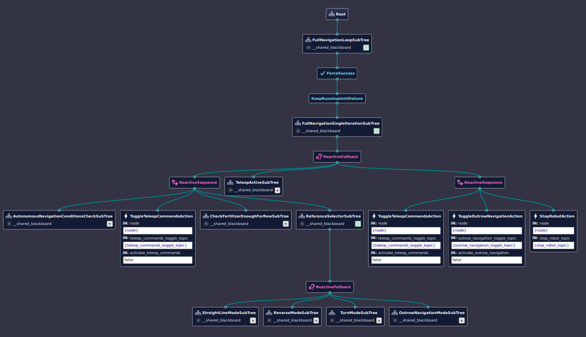
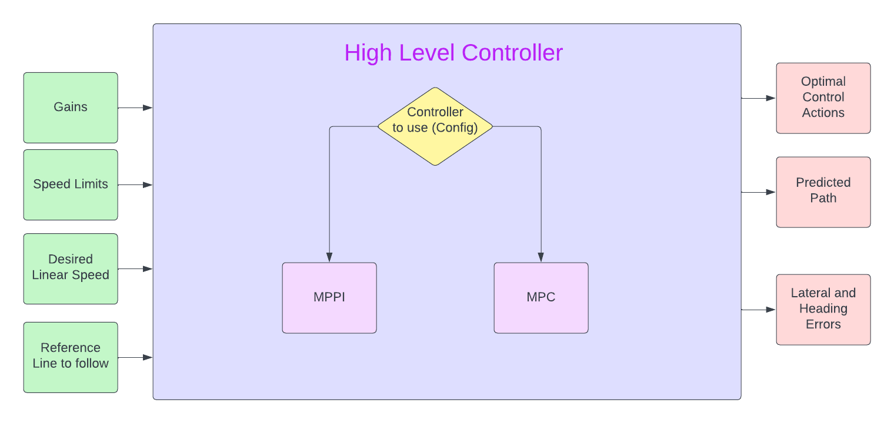
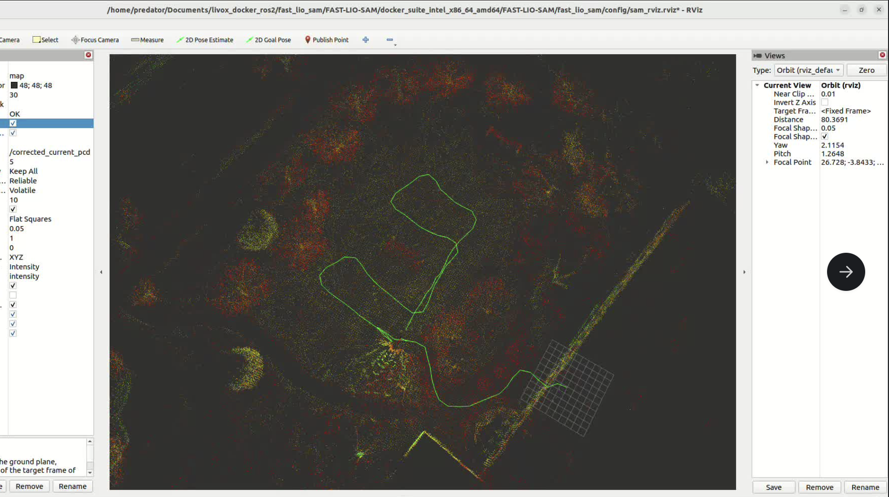

Nov. 2024 - Present
Designed, Developed and Deployed Autonomy Software for 3 different agricultural robots (ROS/ROS2/C++/Python, Behavior Trees, State Machines, Path Planning, Control, State Estimation and SLAM): TerraMax (Oil Palm Precision Fertilization), TerraPreta (Cover-cropping) and TPV (solar panel inspection)

Designed a custom Behavior Tree using Groot2, BehaviorTree.cpp and custom BT Condition/Action plugins to handle high-level navigation/autonomy including Auto/Manual mode based behavior, Teleop Active/Inactive based behavior, Behavior based on status of Battery, Fertilizer, Localisation, etc., Navigation mode based gains, desired linear speed and speed limits.

Built a unified high-level control architecture supporting MPC and MPPI with navigation mode-dependent gains, speed limits, and constraints; integrated B-spline based waypoint smoothing to enforce curvature continuity and improve controller tracking stability.
Implemented reverse row-follow autonomy for a solar field inspection robot (TPV) to handle end-of-row
CAB-line constraints that prevented conventional turning maneuvers

Led development of FSM based autonomy stack for a cover-cropping robot (TerraPreta), enabling GPS-based row following, VIO-based local path generation, and lane transitions in real corn fields. LinkedIn Demo
Implemented Batch State Integration for MPPI state prediction using torch tensor functions reducing execution time by 8x times.

Developed and experimented with a ROS2 ported forked version of FAST-LIO-SAM with reset functionality on Livox HAP Tx LiDAR.